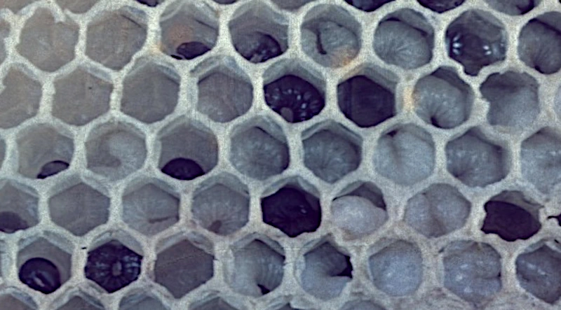

Brood stress guide
Chilled Brood in Honey Bees
Last updated: 1 May 2026
Chilled brood happens when developing brood becomes too cold for too long. It is not an infectious disease in the same way as American foulbrood, European foulbrood, chalkbrood or sacbrood, but it can still cause visible brood loss and patchy brood patterns.
In the UK it is most often seen after cold snaps, poor spring weather, weak colonies, over-expanded brood nests, small nucs, badly timed inspections or hives with too much empty space. The key issue is that the colony cannot keep all developing brood within the correct temperature range.
This guide explains what chilled brood looks like, why it happens, how to reduce the risk and when similar signs should make you check for other brood problems.
Quick signs of chilled brood
Chilled brood is usually suspected when dead or discoloured larvae appear after a period of cold weather, a long inspection, a weak split or a sudden expansion of the brood nest. The brood pattern may become patchy, especially around the edge of the nest where the bees were least able to keep the brood warm.
Affected larvae can look dull, grey, sunken or dried rather than pearly white and healthy. You may also see workers removing dead larvae or pupae from the comb, or find dead brood on the hive floor or near the entrance.
The timing matters. If the signs appear soon after a cold spell, a disruptive inspection, poor spring weather or a weak colony being given too much space, chilled brood becomes more likely than an infectious brood disease.
What does chilled brood look like?

Chilled brood often appears around the outer edges of the brood nest, where nurse bees could not keep the brood warm enough. Larvae or pupae may look greyish, dull, sunken, dried or dead. Workers may start removing dead brood, so you may also see larvae or pupae on the floor or near the entrance.
The brood pattern can become patchy because some developing bees have failed while others continue normally. Unlike some infectious brood diseases, the affected area may match the shape of brood that was outside the cluster or poorly covered by bees.
What causes chilled brood?
Chilled brood is usually caused by a mismatch between the amount of brood being reared and the colony’s ability to keep that brood warm. This can happen after sudden cold snaps, especially in spring when brood rearing has expanded quickly but the adult bee population is still building.
Small colonies, weak colonies, nucs and recent splits are more vulnerable because they may not have enough bees to cover every frame of brood. A hive with too much empty space, draughts, damp or poor weatherproofing can make the problem worse.
Beekeeper handling can also contribute. Long inspections in cold, windy or wet conditions can chill exposed brood, particularly if frames are left out for too long or the brood nest is disrupted. Chilled brood is therefore often a management and weather-related problem rather than a pathogen problem.
Is chilled brood a disease?
Chilled brood is not a disease in the same way as foulbrood, chalkbrood or sacbrood. It is brood loss caused by temperature stress. However, because it can produce dead larvae and a patchy brood pattern, it can be mistaken for a disease at first glance.
If signs persist after the colony strengthens and weather improves, or if you see sunken perforated cappings, ropiness, a strong abnormal smell or unusual larval breakdown, compare the symptoms with the wider brood problems guide.
How to tell chilled brood from disease
Chilled brood is often linked to a clear trigger such as cold weather, a weak colony, excessive space, a recent split or a long inspection. It is often worse at the edge of the brood nest. Brood diseases may show more specific signs such as mummified larvae, sac-like larvae, ropiness, sunken cappings or abnormal smell.
What to do if you suspect chilled brood
If chilled brood is likely, the first step is to make the brood nest easier for the colony to cover and protect. Reduce excess space where appropriate, make sure the hive is dry and weatherproof, and avoid leaving the colony in a box that is too large for the number of bees present.
Keep follow-up inspections short and choose mild, settled weather where possible. Check whether the colony has enough bees to cover the brood, whether stores are adequate, and whether the queen is still laying. If food is low, support the colony in a way that suits the season and local conditions.
In many cases the best approach is to correct the stress factor and give the colony time. If new brood looks healthier in the next cycle, chilling was likely a temporary setback. If the pattern worsens or more suspicious brood signs appear, compare the colony with the wider brood problem guides and seek advice.
What not to do
Do not leave a weak colony with more space than it can properly occupy, especially during cold or unsettled weather. Too much space can make it harder for the bees to keep the brood nest warm and can slow recovery.
Avoid long brood inspections in poor weather, and do not repeatedly open the hive just to check whether the damage has changed. Repeated disturbance can make a chilled brood problem worse rather than better.
Most importantly, do not assume that every patchy brood pattern is chilled brood. If signs persist after conditions improve, or if you see sunken perforated cappings, ropiness, abnormal smell or unusual larval breakdown, treat it as a possible brood disease concern and seek proper advice.
Chilled Brood FAQ
Brood that has already died will not recover, but the colony can recover if the underlying cause is corrected and the queen continues laying healthy brood.
No. Chilled brood is not a notifiable disease. However, suspicious brood disease signs should still be checked carefully.
Yes, especially if the inspection is long, the weather is cold or windy, or the colony is too small to re-cover the brood quickly.
It can cause patchy brood and dead larvae, but foulbrood has more specific warning signs. If you see sunken perforated cappings, ropiness, abnormal smell or suspicious larval breakdown, seek bee inspector advice.
Image credits
Disease reference images on this page are courtesy of The Animal and Plant Health Agency (APHA), Crown Copyright.